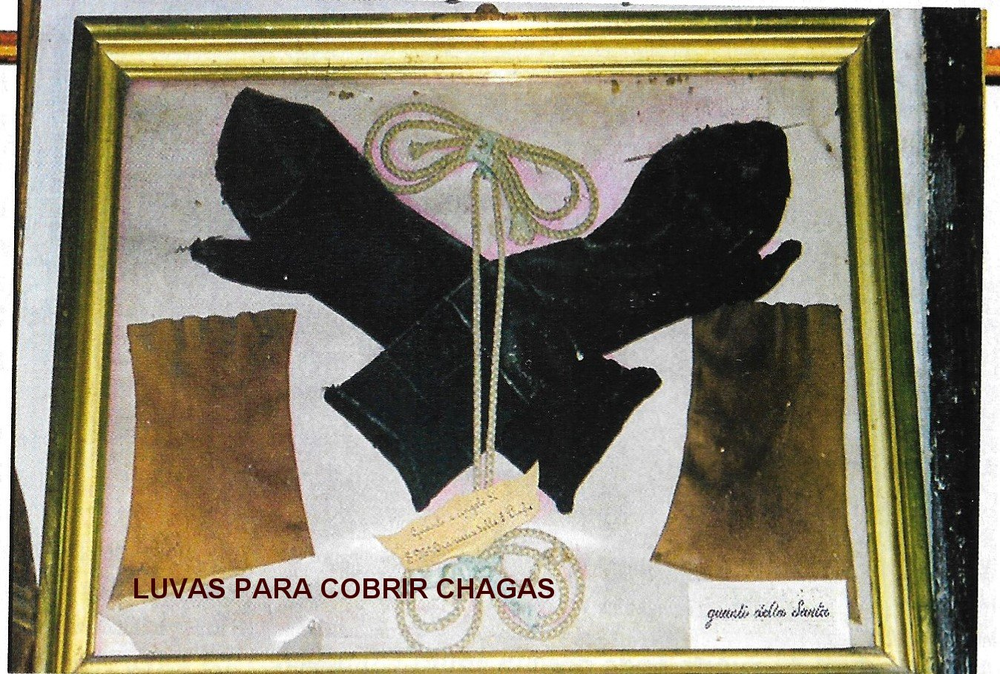
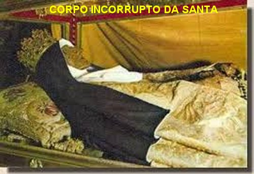
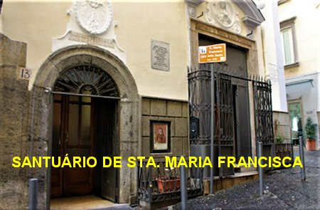
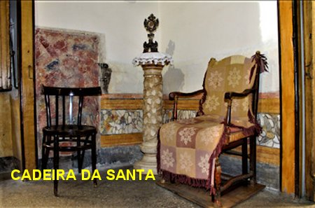
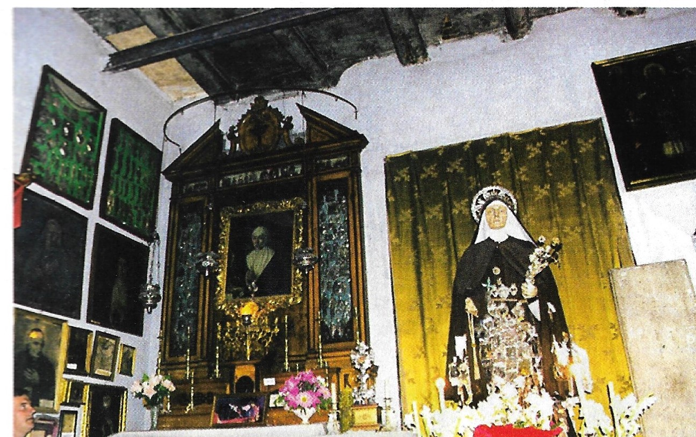
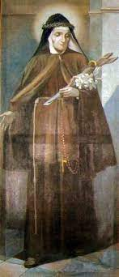

“A CAMINHO DA
ETERNIDADE”

AS CINCO CHAGAS DE JESUS
As Chagas apareceram em
seu corpo, a seu pedido, como já informamos, mas DEUS as tornou invisíveis, apenas mantendo
as dores que elas causavam. Sua saúde era frágil e as doenças a faziam
sofrer enormemente. Quando seu pai sofria no leito, nos últimos momentos
da sua vida, ela pediu que DEUS passasse para ela as dores que o pobre homem
padecia. E isto verdadeiramente aconteceu. Com estes sofrimentos ela alcançou a
conversão de seu pai e de muitos pecadores. Também em sonhos ela via várias
almas do Purgatório que lhe suplicavam que oferecesse seus sofrimentos por elas
e a Santa assim fazia.
Sacerdotes, pessoas religiosas
e piedosas procuravam-na em busca de conselhos. Sua caridade e compaixão,
sobretudo com as pessoas aflitas e miseráveis, seus cuidados e atenções não
tinham limites. Como São Francisco de Assis, Santa Maria Francisca tinha uma
terna devoção ao MENINO JESUS, a SAGRADA EUCARISTIA e a VIRGEM MARIA.
SUAS PRECIOSAS VIRTUDES
Uma das virtudes que mais
repugnam o orgulho humano é a de renunciar à própria vontade para fazer
a vontade dos outros. Por isso, na vida religiosa, ela é objeto de um voto,
segundo o conselho do Redentor:“Quem quiser vir após mim, renuncie a si mesmo”. Maria Francisca despojou-se inteiramente da sua própria
vontade, e vivia só da obediência. Quando lhe perguntavam qual a virtude que
mais lhe agradava, dizia:
“Todas as virtudes me agradam, mas a maior, é a de não nos opormos nunca à vontade
daqueles que têm o direito de mandar em nós”.
Santa Maria Francisca tinha
igualmente uma grande veneração pela Santa Igreja, pelos Mandamentos
e pelas máximas. E procurava inculcar essa devoção em todos que a rodeavam.
Dizia:“Todo
cristão é obrigado a crer e a obedecer cegamente a tudo o que a Santa Igreja
ensina. E ninguém deve esquecer a obediência e submissão ao Sumo Pontífice”.
 Maria Francisca
possuía uma confiança tão grande e um amor tão ardente à SANTÍSSIMA VIRGEM
MARIA, que sempre iniciava as suas orações e seus pedidos em benefício das
pessoas, primeiro suplicando a atenciosa e infalível intervenção DELA. E se
preocupava em propagar e difundir essa devoção dizendo:“Sede verdadeiramente devotos de MARIA; recomendai-vos
a ELA e obtereis de DEUS todas as graças que desejam”.Maria
Francisca se preparava dignamente para as festas de NOSSA SENHORA com orações,
jejuns e mortificações, inclusive rezando todos os dias em SUA Honra:
o Rosário e a Ladainha de NOSSA SENHORA.
Maria Francisca
possuía uma confiança tão grande e um amor tão ardente à SANTÍSSIMA VIRGEM
MARIA, que sempre iniciava as suas orações e seus pedidos em benefício das
pessoas, primeiro suplicando a atenciosa e infalível intervenção DELA. E se
preocupava em propagar e difundir essa devoção dizendo:“Sede verdadeiramente devotos de MARIA; recomendai-vos
a ELA e obtereis de DEUS todas as graças que desejam”.Maria
Francisca se preparava dignamente para as festas de NOSSA SENHORA com orações,
jejuns e mortificações, inclusive rezando todos os dias em SUA Honra:
o Rosário e a Ladainha de NOSSA SENHORA.
Todavia, muitas
pessoas a tratavam mal e ela rezava e oferecia as suas orações com paciência, a
todos os maus
tratos que recebia daqueles que a ofendiam. E sempre com muita educação
e respeito, tratava bem aqueles que a tratavam mal. As pessoas murmuravam contra
ela... Maria Francisca abaixava a cabeça e permanecia em silêncio, para se
assemelhar a JESUS que ficou silencioso nos sofrimentos da SUA Paixão. Os êxtases
e as profecias lhe eram familiares. Mas ela era muito incompreendida, era perseguida
e tratada como visionária, inclusive por autoridades da Igreja, que a submeteram
a vários exames para avaliar a sua sanidade mental. Durante sete anos de duro martírio
suportou tudo com inalterada mansidão.
SOFRIMENTOS DA SANTA
A Santa sofreu também muitas incompreensões
por parte do pai, das irmãs e, inclusive de alguns Confessores que a fizeram sofrer,
pois, para provar a sua Santidade a tratavam com terrível severidade na direção espiritual.
Maria Francisca disse um dia ao seu Confessor:
Sofri em minha vida tudo o que uma
pessoa pode sofrer. Porém, tudo foi por amor de DEUS. E acrescentou:
"Padre, seja muito bondoso com as pessoas que
vêm confessar. Rezo para que os Padres não sejam duros com ninguém".

PRENÚNCIOS DE SOFRIMENTOS
PARA A IGREJA
Anunciou que em breve viriam sofrimentos
terríveis para a Igreja Católica. E realmente as ferozes perseguições da Revolução Francesa
quando vieram, ceifaram milhares de vidas de homens e mulheres católicas. Ela pediu a DEUS
que não permitisse que ela presenciasse aqueles desastres. Em 1763 Santa Maria Francisca
conheceu, por revelação Divina, que o reino de Nápoles seria desolado por uma grande fome
seguida por terrível epidemia. Ela mesma foi atingida pela enfermidade chegando
às portas da morte, tendo recebido os últimos Sacramentos. Morreu santamente
quando a epidemia começou, no dia 6 de outubro de 1791, com 76 anos de idade.
BEATIFICAÇÃO E CANONIZAÇÃO
Uma grande multidão participou
de seu funeral e seu corpo foi sepultado na Igreja Franciscana de Santa Lúcia
do Monte na cidade de Nápoles, Igreja que ela frequentou durante a sua vida. Nesta
Igreja está também o túmulo de João José, que agora foi também declarado Santo.
Maria Francisca foi declarada
Venerável pelo Papa Pio VII, em 18 de Maio de 1803; foi “Beatificada” em 12
de Novembro de 1843 pelo Papa Gregório XVI; e foi “Canonizada”
em 29 de Junho de 1867 pelo Papa Pio IX. Foi à primeira Santa Napolitana. Sua
festa é celebrada no dia 6 de Outubro, e é festivamente observada pelos Frades
Menores e pelos Capuchinhos.
DERRADEIRAS NOTÍCIAS

Há dois séculos o povo incessantemente pede auxílio à Santa
Maria Francisca para cobrir as necessidades e solucionar os seus problemas, suplicando-lhe
que interceda junto a DEUS e consiga de NOSSO SENHOR os benefícios e graças, para atender
as suas necessidades; e sempre, ela consegue de DEUS uma quantidade especial de graças e
benefícios, conforme atestam as duas lápides no exterior da Capela do Santuário.
Uma delas se refere a 2ª Guerra Mundial, durante a qual
Nápoles foi bombardeada
105 vezes pelos Nazistas, mas os quarteirões e sua densa população foram
cuidadosamente poupados. Na Capela há ainda uma Cadeira que era usada pela Santa.
O Papa Pio IX, que canonizou
Santa Francisca, emitiu a declaração oficial de que ela era a padroeira das mulheres
grávidas e das mulheres que tinham dificuldades de engravidar.
No dia 6 de Outubro de 2001,
seus restos mortais foram transferidos da Igreja de Santa Lúcia para a Casa Residencial,
onde ela passou a última metade da sua vida. Aquela Casa foi
transformada no Santuário de Santa Maria Francisca das Cinco Chagas.
No Altar do Santuário está sepultado o seu corpo incorrupto para satisfação e
alegria de todos os cristãos. Desde a inauguração do Santuário, surgiu uma
prática que se tornou muito comum as mulheres grávidas; elas frequentam o
Santuário, sentam na cadeira que era de Maria Francisca, rezam e fazem o pedido
para ela interceder junto a DEUS na gravidez, a fim de nascer um filho ou uma
filha com muita saúde e que seja a verdadeira alegria dos pais.


NO QUARTO ONDE DORMIA FIZERAM UM ALTAR

 -
PRÓXIMA PÁGINA
-
PRÓXIMA PÁGINA
-
PÁGINA ANTERIOR
-
RETORNA AO ÍNDICE